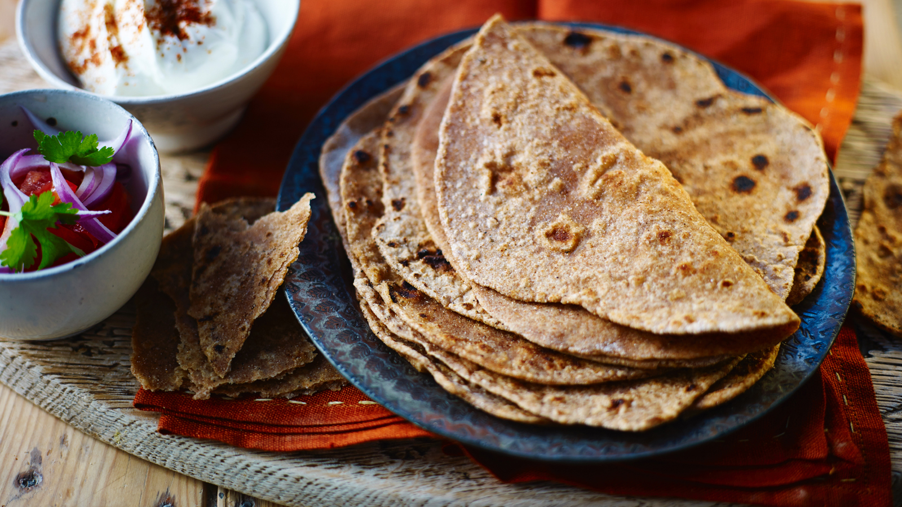

Chicken dish prepared by roasting chicken marinated in yoghurt and spices in a tandoor,
a cylindrical clay oven
×
Suggested Restaurant
Al Qawiy Tandoori Chicken
Mutton Curry
A curry dish that is prepared from mutton and vegetables.
Mutton curry was originally prepared heated by a fire in a large pot
×
Suggested Restaurant
Big Sam Curry House
Nasi Kandar
A meal of steamed rice which can be plain or mildly flavoured,
and served with a variety of curries and side dishes
×
Suggested Restaurant
Restaurant Nasi Kandar Segambut
Thosai
A type of pancake made from a fermented batter. It is somewhat similar to a crepe in appearance.
Its main ingredients are rice and black gram
×
Suggested Restaurant
Thosai Cafe

Chapati
An unleavened flatbread made of whole wheat flour known as atta,
mixed into dough with water and optional salt in a mixing utensil
called a parat, and is cooked on a flat skillet
×
Suggested Restaurant
Thosai Cafe
Banana Leaf Rice
White rice is served on a banana leaf with an assortment of vegetables,
pickles, appalam and other regional condiments usually sour, salty or spicy
×
Suggested Restaurant
Thosai Cafe
Vadai
A category of savoury fried snacks
×
Suggested Restaurant
SS15 Best Vadai Stall
Putu Mayam
Also known as Idiyappam, consisting of rice flour pressed into noodle form and then steamed
×
Suggested Restaurant
Al Qawiy Tandoori Chicken
Muruku
A savoury, crunchy snack originating from the Indian subcontinent.
The snack's name derives from the Tamil word for "twisted", which refers to its shape
×
Suggested Restaurant
Syarikat Haja Haliq
Idli
A type of savoury rice cake made by steaming a batter consisting of
fermented black lentilsand rice
×
Suggested Restaurant
Restoran Murugan Idli Kaddai
Puri
An unleavened deep-fried bread. It is eaten for breakfast or as a snack or light meal.
It is usually served with a savory curry or bhaji